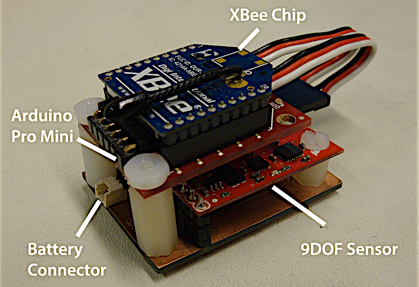
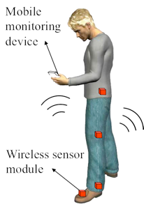
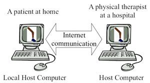
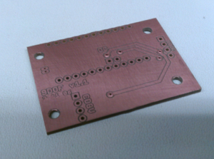

PROJECTs

Network based Wireless Rehabilitation
June 1, 2011

As part of my research in the MSC lab with Joonbum Bae, I worked on setting up the hardware and software for a proposed wireless sensor network for gait rehabilitation. The idea was that in classical gait rehabilitation therapy, there are no concrete numbers on which to base a diagnosis. Much of therapy done for a patient afflicted with a gait disorder is based on a therapist’s physical observation. More often than not, the level of care is proportional to the therapist’s experience.
For patients with a gait disorder, it is often very difficult to physically transport themselves to receive therapy as well.
As a result, we created a system where a patient will wear a series of intelligently placed sensor nodes (pictured below) that will record Euler angles and transfer it wirelessly to a local computer, which will then transfer it via Internet to the therapist’s computer. The pre-populated circuit board is shown above.
With Kevin Haninger, I worked on developing the software required to calculate the Euler angles in Arduino using Varesano’s FreeIMU library and packet loss compensation and visualization in LabVIEW. Each sensor node on the patient calculates Euler angles in the onboard Arduino. When prompted by the local computer, the Arduino will respond and return a set of measurements to the local computer, where LabVIEW will parse it and process the data into useful information.
This video, taken towards the end of summer, highlighted our first success with LabVIEW’s tricky visualization VIs.
This video showcases our entire human model visualized in LabVIEW. Joonbum is shown here imitating faulty gait on the treadmill and assessing how well the wireless sensor network can capture that motion and translate it on the big screen.
We have since published our work into a conference paper at the 2012 IEEE/ASME International Conference on Advanced Intelligent Mechatronics and can be found here.
This is a picture of the sensor node that I assembled for this research project. It contains off the shelf components from Sparkfun, like an XBee chip, a 9DOF sensor stick, and an Arduino Pro Mini. (Battery is not shown here but would dangle to the left)


